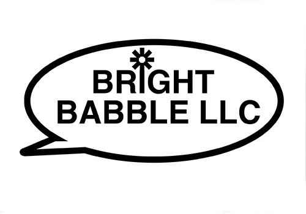
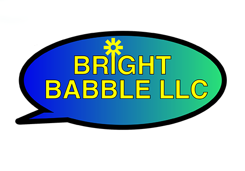
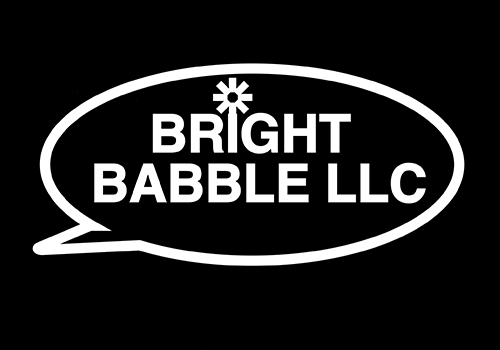

Polished Logo in Vector-based Program
3. Polished logo in a vector-based program (7-points - 7%)
Create a web-page using Bootstrap and present the logo with at least four variations that include
(1) black and white,
(2) color variation,
(3) a reverse version,
(4) a favicon.
The sizes you present are up to you, but do specify how your logo can be used and configured similar to the student examples. Also create a favicon of the logo and use it in the tab of the page that you post.
Be sure to consider both light and dark browser backgrounds. Post a link to the page on the discussion board. Submit a PDF with all of the polished logos to the submissions folder.
Following vectors were created using Illustrator:
Black and White

Color Variation

Reverse Version
